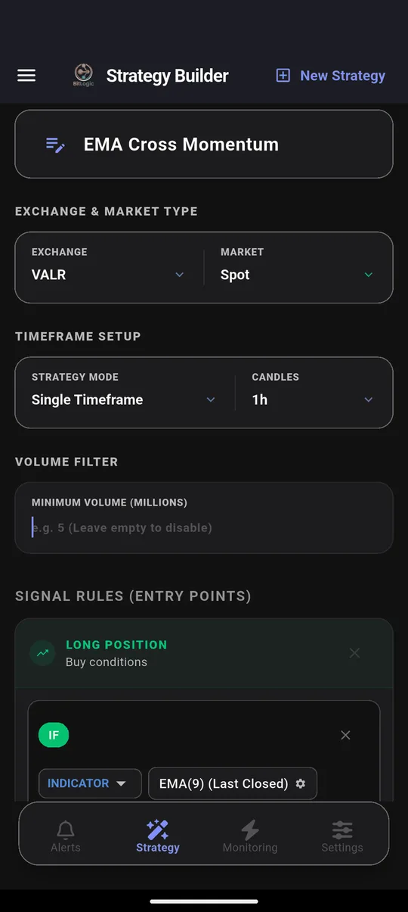
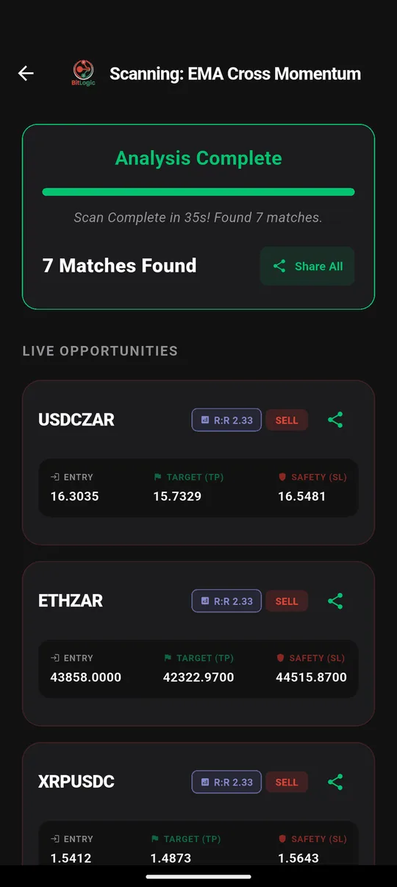

VALR Screener: How to Scan VALR's ZAR and USDC Pairs for Setups
Quick answer: VALR is one of South Africa's largest crypto exchanges, with rand (ZAR), USDC and USDT markets. It doesn't include a screener that checks every pair against a technical rule. BitLogic does: on 26 September 2026 it scanned 173 VALR pairs in 35 seconds and found 7 matches. All 7 were sell signals, including USDC/ZAR and ETH/ZAR.
BitLogic is a no-code crypto screener and alert app for Android and Windows, with a free web screener. It scans every pair on an exchange against rules you build and sends matches as push notifications, or as Telegram messages on Pro.
Features and test results checked 26 September 2026.
Why Screen VALR?
- Rand pricing. If you trade in ZAR, signals from VALR's own ZAR pairs reflect the prices you actually pay, including the rand's own moves against the dollar.
- The whole exchange in half a minute. About 170 active spot pairs means a full scan takes seconds, so frequent re-checks are cheap.
- Spot and a small set of perpetuals. Screen either market.
How to Screen VALR in BitLogic
Step 1: Choose VALR
In the Strategy tab, pick VALR, then Spot or Futures.

Step 2: Build or load a rule
The test used a trend stack on 1-hour candles. Long: EMA 9 above EMA 21 above EMA 200 with above-average volume. Short: the same stack inverted. Every condition must be true for a pair to match.
Step 3: Scan

Step 4: Automate it
Live Monitoring re-runs the same strategy in the background (every 1, 5, 15 or 30 minutes, every 1 or 4 hours, or once a day) and notifies you when a new pair matches, even with the app closed. You can monitor up to five strategies at once. On Pro, the same alerts also go to Telegram: tap Connect Telegram, press Start in the bot, and you are done.
Screen VALR free on Google Play, or on Windows.
The Test: VALR, 26 September 2026
| Setting | Value |
|---|---|
| Market | VALR spot, 1-hour candles |
| Rule | EMA 9 / 21 / 200 trend stack with volume (long and short) |
| Pairs checked | 173 |
| Time | 35 seconds |
| Matches | 7, all short-side, including USDC/ZAR, ETH/ZAR and XRP/USDC |
Seven sell signals and no buys is itself information: on that day, the trend across VALR's markets pointed down. A USDC/ZAR sell signal means the rand was strengthening against the dollar. For rand-based traders, that matters as much as any coin's move.
These are scan results, not recommendations. A match means a pair met the rule at that moment, nothing more.
Three Rules for VALR
1. Rand-pair oversold
IF RSI(14) [1h, Last Closed] Is Less Than 30One condition that covers every VALR pair: the simplest useful alert there is.
2. Trend turn on the 6-hour
IF EMA(9) [6h, Last Closed] Crosses Above EMA(21) [6h]
AND Close [6h] Is Greater Than EMA(50) [6h]VALR offers 6-hour candles, a good middle ground for swing traders.
3. Volume wake-up
IF Volume [1h, Last Closed] Is Greater Than Volume SMA(20) × 3This catches quiet pairs suddenly trading three times their usual volume.
VALR Timeframes in BitLogic
| Market | Timeframes |
|---|---|
| VALR Spot and Futures | 1m, 5m, 15m, 30m, 1h, 6h, 1d |
VALR doesn't publish 4-hour candles; use 6-hour instead.
FAQ
Does VALR have a screener?
VALR offers charts and price data per market but no screener that checks every pair against a technical rule. BitLogic scans all of VALR's roughly 170 active spot pairs in about half a minute.
Can I get VALR alerts on my phone?
Yes. Build a rule in BitLogic, select VALR, and turn on Live Monitoring. BitLogic notifies you when any pair matches, even with the app closed, and Pro also sends alerts to Telegram.
Does BitLogic show prices in rand?
Yes. BitLogic shows each pair in its own quote currency, so VALR's ZAR pairs appear in rand.
Does BitLogic need my VALR API key?
No. BitLogic reads VALR's public market data and never places trades.
The Bottom Line
VALR's market is small enough to scan in seconds and priced in the currency South African traders actually use. Write one rule, let Live Monitoring re-check it, and get told when VALR lines up.
Download BitLogic free on Google Play and scan VALR in half a minute.
Nothing here is financial advice.